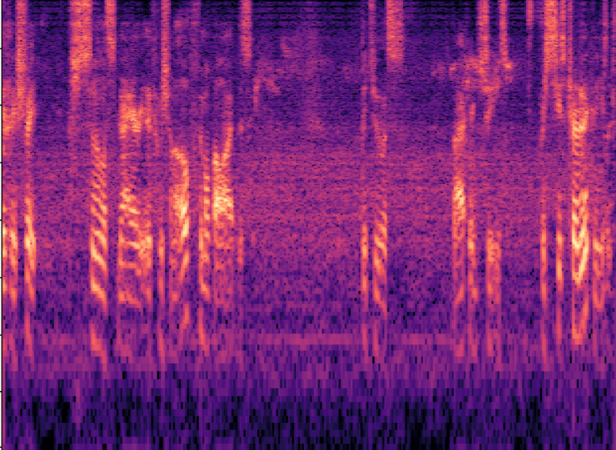
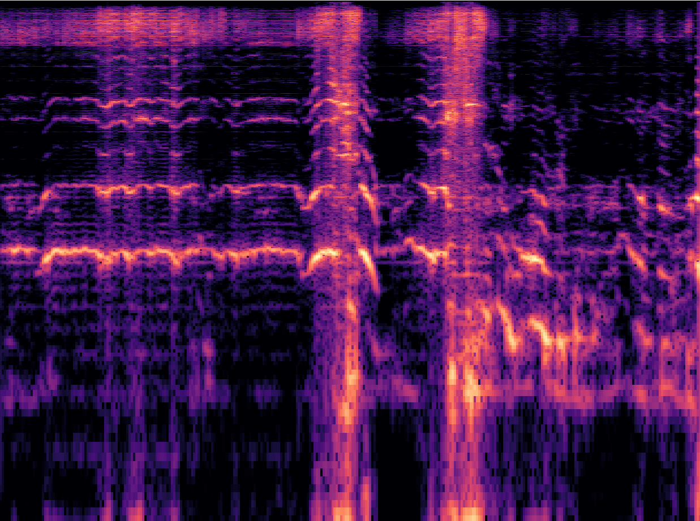
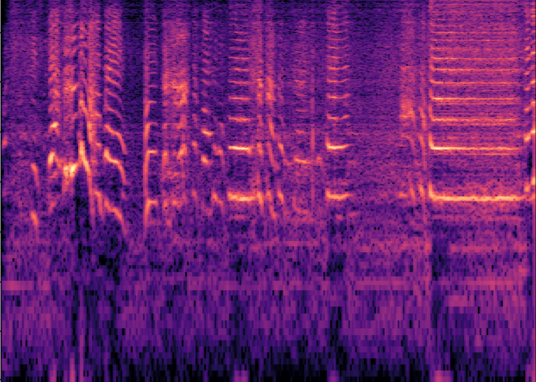
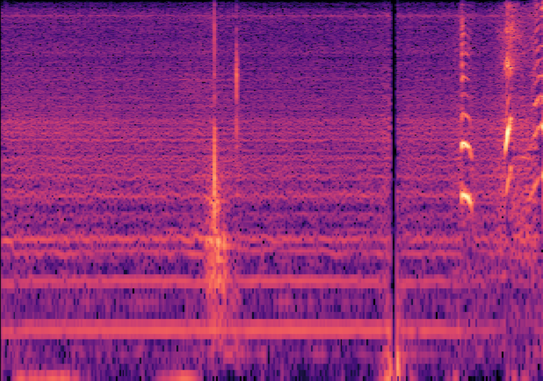
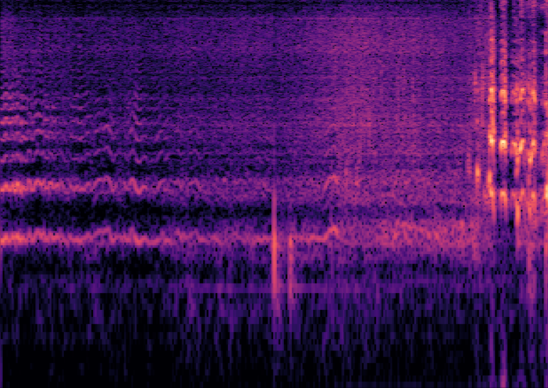

Abstract
Text-to-audio (T2A) generation has achieved remarkable progress in generating a variety of audio outputs from language prompts. However, current state-of-the-art T2A models still struggle to satisfy human preferences for prompt-following and acoustic quality when generating complex multi-event audio. To improve the performance of the model in these high-level applications, we propose to enhance the basic capabilities of the model with AI feedback learning. First, we introduce fine-grained AI audio scoring pipelines to: 1) verify whether each event in the text prompt is present in the audio (Event Occurrence Score), 2) detect deviations in event sequences from the language description (Event Sequence Score), and 3) assess the overall acoustic and harmonic quality of the generated audio (Acoustic & Harmonic Quality). We evaluate these three automatic scoring pipelines and find that they correlate significantly better with human preferences than other evaluation metrics. This highlights their value as both feedback signals and evaluation metrics. Utilizing our robust scoring pipelines, we construct a large audio preference dataset, T2A-FeedBack, which contains 41k prompts and 249k audios, each accompanied by detailed scores. Moreover, we introduce T2A-EpicBench, a benchmark that focuses on long captions, multi-events, and story-telling scenarios, aiming to evaluate the advanced capabilities of T2A models. Finally, we demonstrate how T2A-FeedBack can enhance current state-of-the-art audio model. With simple preference tuning, the audio generation model exhibits significant improvements in both simple (AudioCaps test set) and complex (T2A-EpicBench) scenarios.
A.AI Audio Scoring Pipelines.
A.1.Events Occurrence Score
| Prompt | Good | Not Good |
|---|---|---|
| Pots and pans rattle in the background | ||
|
Score: 73.21 |
Score: 8.46 |
|
| A bell is ringing and a train blows its horn twice long and hard | ||
|
Score: 69.64 |
Score: 33.78 |
|
| A flushing of water and people talking |
.png)
|
|
|
Score: 44.57 |
Score: -8.60 |
|
| A man speaks and bees buzz |  | |
|
Score: 56.53 |
Score: 20.99 |
|
A.2.Events Sequence Score
| Prompt | Good | Not Good |
|---|---|---|
| Child's clear voice carries as they begin speaking, followed by the rhythmic clapping of audience members' hands once they finish a point | ||
|
Score: 1.00 |
Score: -1.00 |
|
| The sizzling sound of oil in the frying pan begins, followed by the woman's voice carrying a conversation | ||
|
Score: 1.00 |
Score: -1.00 |
|
| Adult female's clear voice echoes, followed by quick tapping sounds. Subsequently, a dog barks sharply |
.png)
|
|
|
Score: 1.00 |
Score: -0.33 |
|
| Man's voice carries through the room as he speaks, followed by the sound of a clock ticking in the background, then the distant hum of a car engine | ||
|
Score: 1.00 |
Score: 0.33 |
|
A.3.Acoustic&Harmonic Quality
| Score | Prompt | Audio | Prompt | Audio |
|---|---|---|---|---|
| 4 | An adult male is speaking, and bees are buzzing | The wind blows and birds are singing | ||
| 3 | A pig is making oinking noises | Banging then a meow followed by speech | ||
| 2 | Humming of passing traffic followed by a musical horn | Waves crash against the beach with just a little wind going by | ||
| 1 | A baby is crying and a person sneezes then another person speaks |  | A woman speaking continuously | |
B.Samples on Audiocaps Test Set.
| Prompt | Before tuning | After tuning |
|---|---|---|
| A car screeches loudly as a man speaks over an intercom | ||
| A family is having fun honking a vehicle horn |  | |
| A bird chirping and then a man talking | ||
| Footsteps shuffling followed by a cat meowing and then a toilet flushing | ||
C.Samples on EpicBench.
| Prompt | Before tuning | After tuning |
|---|---|---|
| In a serene garden, the gentle rustle of leaves dances in the breeze. Suddenly, a bird chirps cheerfully from a nearby branch, filling the air with music. A child's giggle rings out as they run through the flowers, brightening the moment. Just then, a soft bell tolls in the distance, reminding everyone of the passing time. | ||
| In a vibrant downtown area, the honking of cars creates a chaotic symphony. Suddenly, a street vendor shouts out their specials, trying to attract customers. The laughter of people enjoying a nearby café adds warmth to the urban sounds. Just then, a bus rumbles past, its engine growling as it continues on its route. | ||
| In a vibrant marketplace, vendors shout their prices, adding to the lively atmosphere. Suddenly, a bell rings as a customer makes a purchase, drawing attention to the stall. Nearby, a musician strums a guitar, his melody weaving through the conversations. Just then, the aroma of spices is interrupted by a loud laughter from a group of friends enjoying their snacks. | ||
| In an open field, the buzz of insects hums steadily, creating a constant backdrop. Suddenly, a hawk screeches overhead, searching for its next meal. The distant sound of a bubbling brook can be heard, providing a soothing contrast. Just then, a child's laughter rings out as they chase butterflies, their joy echoing across the landscape. |  |  |